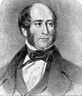

|
|
|
based on Psalm 34
Tell his praise in song and story,
bless the Lord with heart and voice;
in my God is all my glory,
come before him and rejoice.
Join to praise his Name together,
he who hears his people's cry;
tell his praise, come wind or weather,
shining faces lifted high.
To the Lord whose love has found them
cry the poor in their distress;
swift his angels camped around them
prove him sure to save and bless.
God it is who hears our crying
though the spark of faith be dim;
taste and see! beyond denying
blest are those who trust in him.
Taste and see! In faith draw near him,
trust the Lord with all your powers;
seek and serve him, love and fear him,
life and all its joys are ours:
true delight in holy living,
peace and plenty, length of days;
come, my children, with thanksgiving
bless the Lord in songs of praise.
In our need he walks beside us,
ears alert to every cry;
watchful eyes to guard and guide us,
love that whispers `It is I.'
Good shall triumph, wrong be righted,
God has pledged his promised word;
so with ransomed saints united
join to praise our living Lord!
Words © 1984 Hope Publishing Company, 380 S Main Pl, Carol Stream, IL 60188
|
|
|
https://www.hopepublishing.com/find-hymns-hw/hw2198.aspx
|
|
|
|
|


034a以心以口讚美主
| ext: | Tell his praise in song and story |
| Author: | Timothy Dudley-Smith, b. 1926 |
| Tune: | ABBOT'S LEIGH |
| Composer: | Cyril Vincent Taylor, 1907-1991 |
| Short Name: | Timothy Dudley-Smith |
| Full Name: | Dudley-Smith, Timothy, 1926- |
| Birth Year: | 1926 |
Timothy Dudley-Smith (b. 1926)

Educated at Pembroke College and Ridley Hall, Cambridge, Dudley-Smith has served the Church of England since his ordination in 1950. He has occupied a number of church positions, including parish priest in the diocese of Southwark (1953-1962), archdeacon of Norwich (1973-1981), and bishop of Thetford, Norfolk, from 1981 until his retirement in 1992. He also edited a Christian magazine, Crusade, which was founded after Billy Graham's 1955 London crusade. Dudley-Smith began writing comic verse while a student at Cambridge; he did not begin to write hymns until the 1960s. Many of his several hundred hymn texts have been collected in Lift Every Heart: Collected Hymns 1961-1983 (1984), Songs of Deliverance: Thirty-six New Hymns (1988), and A Voice of Singing (1993). The writer of Christian Literature and the Church (1963), Someone Who Beckons (1978), and Praying with the English Hymn Writers (1989), Dudley-Smith has also served on various editorial committees, including the committee that published Psalm Praise (1973).
史密斯劍橋時期開始寫詩，每年固定創作 6-8 首新詩，有 300 首以上作品，其中多首是英語世界常用的聖詩。達理史密斯 1955-60 年間任福音聯盟秘書長時曾配合葛理翰（Billy Graham）牧師佈道會編輯《聖戰》（Crusade）雜誌，2003 年美國希望出版社（Hope Publishing Company）將他之前所著四本詩歌集彙整出版為《讚美之家》（A House of Praise）一書；同年亦獲英國皇家勳章聖詩貢獻獎。達理史密斯也是美加聖詩學會（Hymn Society in the United States and Canada）院士、皇家教會音樂學院（Royal School of Church Music）院士，2009 年獲頒英國杜勒姆大學（University of Durham）榮譽神學博士。
英國聖詩大爆炸— 1960 年代中期，英國多位詩人開始以較現代的用語寫出反映現代議題的信仰詮釋，如科技、太空、環保、公義、旅遊，及天主教第二大公會議後普世教會交流、合一等，聖詩 479 首 Timothy Dudley-Smith (b.1926)寫的〈看此個破碎的世界〉(華語：看哪!今日破碎世界)即其中一首。
Tune Information
| Title: | ALLELUIA (Wesley) |
| Composer: | Samuel Sebastian Wesley (1868) |
| Meter: | 8.7.8.7 D |
| Incipit: | 11716 56712 35665 |
| Key: | F Major |
| Copyright: | Public Domain |
| Short Name: | Samuel Sebastian Wesley |
| Full Name: | Wesley, Samuel Sebastian, 1810-1876 |
| Birth Year: | 1810 |
| Death Year: | 1876 |
Samuel Sebastian Wesley (b. London, England, 1810; d. Gloucester, England, 1876)

was an English organist and composer. The grandson of Charles Wesley, he was born in London, and sang in the choir of the Chapel Royal as a boy. He learned composition and organ from his father, Samuel, completed a doctorate in music at Oxford, and composed for piano, organ, and choir. He was organist at Hereford Cathedral (1832-1835), Exeter Cathedral (1835-1842), Leeds Parish Church (1842-1849), Winchester Cathedral (1849-1865), and Gloucester Cathedral (1865-1876). Wesley strove to improve the standards of church music and the status of church musicians; his observations and plans for reform were published as A Few Words on Cathedral Music and the Music System of the Church (1849). He was the musical editor of Charles Kemble's A Selection of Psalms and Hymns (1864) and of the Wellburn Appendix of Original Hymns and Tunes (1875) but is best known as the compiler of The European Psalmist (1872), in which some 130 of the 733 hymn tunes were written by him.
Bert Polman
Samuel Sebastian Wesley (1810 – 1876)

Samuel Sebastian Wesley (14 August 1810 – 19 April 1876) was an English organist and composer. Wesley married Mary Anne Merewether and had 6 children.[1] He is often referred to as S.S. Wesley to avoid confusion with his father Samuel Wesley.
Biography[edit]
Born in London, he was the eldest child in the composer Samuel Wesley's second family, which he formed with Sarah Suter having separated from his wife Charlotte.[2] Samuel Sebastian was the grandson of Charles Wesley. His middle name derived from his father's lifelong admiration for the music of Bach.

After singing in the choir of the Chapel Royal as a boy, Samuel Sebastian embarked on a career as a musician, and was appointed organist at Hereford Cathedral in 1832. While there he married the sister of the Dean, John Merryweather. S.S. Wesley was, like his father Samuel Wesley, a Freemason. He was initiated in Palladian Lodge No.120 in Hereford on 17 September 1833. He moved to Exeter Cathedral three years later, and joined St George's Lodge No.129 Exeter on 10 December 1835. He subsequently held appointments at Leeds Parish Church (now Leeds Minster) (from 1842), Winchester Cathedral (from 1849), Winchester College and Gloucester Cathedral (1865-1876).[3][4] In 1839 he received both his Bachelor of Music degree and a Doctor of Music degree from Oxford. He became a Professor of Organ at the Royal Academy of Music in 1850. He died at his home in Gloucester on 19 April 1876 aged 65. He is buried next to his daughter in St. Bartholomew's Cemetery in Exeter by the old City Wall.[5] There are memorial tablets to him in Exeter Cathedral and Winchester Cathedral, and his memorial at Gloucester Cathedral is in stained glass.
Famous in his lifetime as one of his country's leading organists and choirmasters, he composed almost exclusively for the Church of England, which continues to cherish his memory. His better-known anthems include Thou wilt keep him in perfect peace and Wash me throughly. He also wrote several rather late examples of verse anthems, which contrast unison and contrapuntal sections with smaller, more intimate passages for solo voice or voices. Blessed be the God and Father, The Wilderness and Ascribe unto the Lord are of considerable length, as is his Service in E.
The popular short anthem Lead me, Lord is an extract from Praise the Lord, O my soul. Several of his pieces for solo organ have enduring value and continue to be played in recitals now and then.
Of his hymn tunes the best-known are "Aurelia" and "Hereford." "Aurelia" has been widely adopted in the United States, and is regularly heard there. Usually now sung to the words "The Church's One Foundation", Wesley composed the tune for the hymn "Jerusalem the Golden", hence the name "Aurelia".[6]
One notable feature of his career is his aversion to equal temperament, an aversion which he kept for decades after this tuning method had been accepted on the Continent and even in most of England. Such distaste did not stop him from substantial use of chromaticism in several of his published compositions.
While at Winchester Cathedral Wesley was largely responsible for the Cathedral's acquisition in 1854 of the Father Willis organ which had been exhibited at The Great Exhibition, 1851. The success of the Exhibition organ led directly to the award of the contract to Willis for a 100-stop organ for St George's Hall, Liverpool built in 1855. Wesley was the consultant for this major and important project, but the organ was, arguably, impaired for some years by Wesley's insistence that it be tuned to unequal temperament.[7][6]
Wesley, with Father Willis, can be credited with the invention of the concave and radiating organ pedalboard, but demurred when Willis proposed that it should be known as the "Wesley-Willis" pedalboard. However, their joint conception has been largely adopted as an international standard for organs throughout the English-speaking world and those exported elsewhere.[7][6]
Musical works[edit]
Selected works include the following:[8][9]
Anthems[edit]
- The Wilderness (1832)
- Blessed be the God and Father (1833/34)
- Let us lift up our heart (c. 1836)
- O Lord, thou art my God (c. 1836)
- To my request and earnest cry (c. 1836)
- Wash me throughly (c. 1840)
- Cast me not away (1848)
- The face of the Lord (1848)
- Thou wilt keep him in perfect peace (c. 1850)
- Ascribe unto the Lord (1851)
- I am thine, O save me (1857)
- Praise the Lord, O my soul (1861), includes:
- Lead me, Lord
Services[edit]
- Morning and Evening Service in E (1845)
- Short Full Service in F (c. 1865)
Hymn tunes[edit]
- "Alleluia"
- "Aurelia"
- "Bude"
- "Colchester"
- "Cornwall"
- "Doncaster"
- "Gweedore"
- "Hampton"
- "Harewood"
- "Hereford"
- "Hornsey"
- "Wetherby"
- "Wigan"
- "Winscott"
- "Wrestling Jacob"
- "Bowden" (arranged by Wesley, original composer not known)
Other hymn tunes composed or arranged by Wesley are listed on the Library of Congress Linked Data Service.
Organ[edit]
- "Air on Holsworthy Church Bells"
- Variations and Fugue on "God Save the King" (1831) [in addition to this set of 7 variations in G,[10] he also composed 8 variations in B Flat and 3 variations in D on the same theme][11]
- Introduction and Fugue in C sharp minor (?1835)
- Larghetto in F minor (c. 1835)
- Three Pieces for a Chamber Organ, book 1 (1842), includes:
- Choral Song and Fugue
- Three Pieces for a Chamber Organ, book 2 (1843), includes:
- Larghetto in F sharp minor
Literary works[edit]
- A Few Words on Cathedral Music and the Musical System of the Church, with a Plan of Reform (1849)
Bicentenary celebrations[edit]
Celebrations in Leeds for the 200th anniversary of Wesley's birth began with Festal Evensong at Leeds Parish Church on Sunday 4 July 2010 followed by a gala choral recital. Worship on Sunday 15 August was broadcast on BBC Radio Four. Simon Lindley gave a commemorative recital of Wesley's organ music in the evening and a commemorative recital of music by Wesley at Leeds Town Hall on 13 September.
https://en.wikipedia.org/wiki/Samuel_Sebastian_Wesley